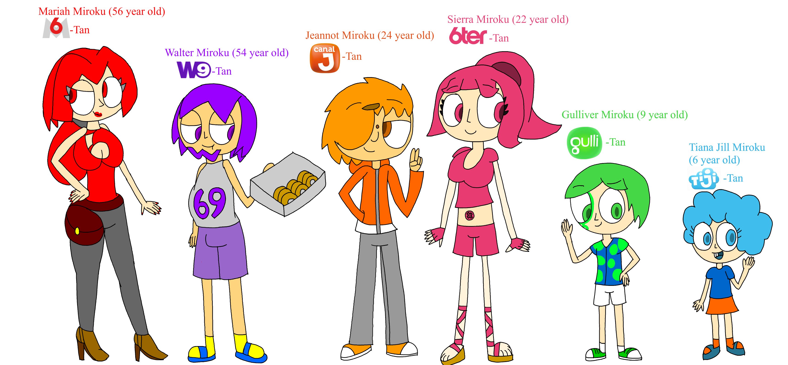
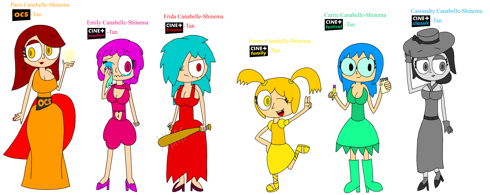
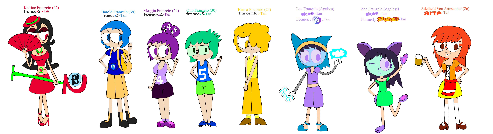
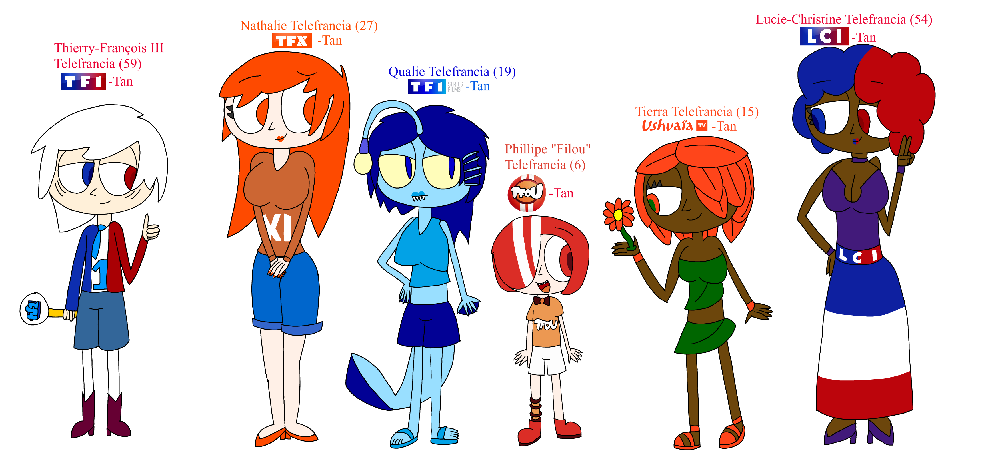
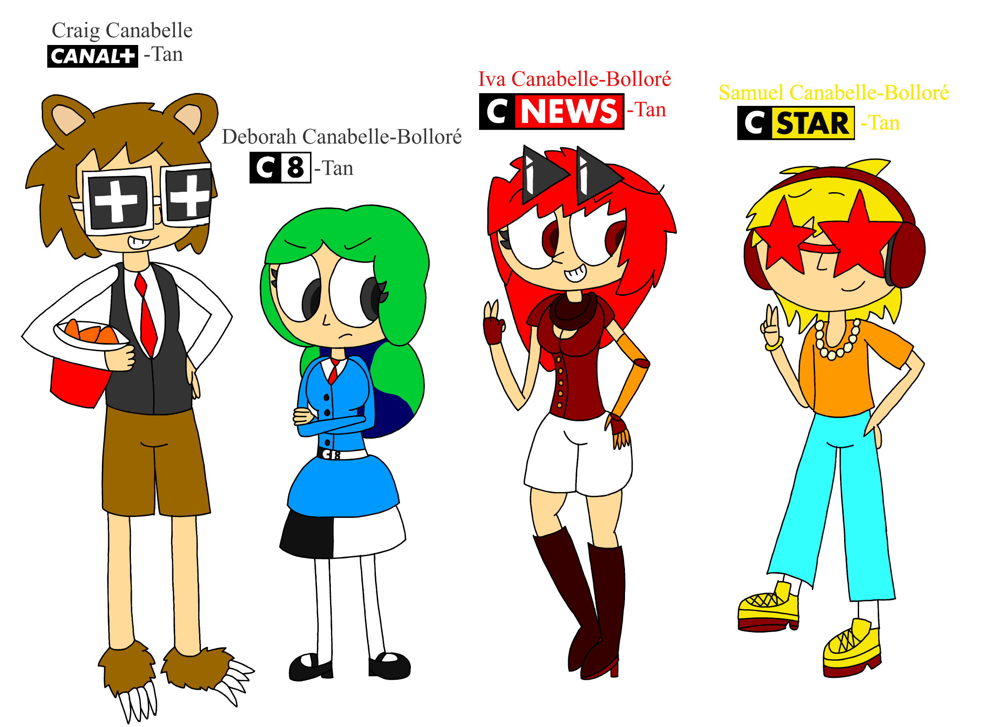
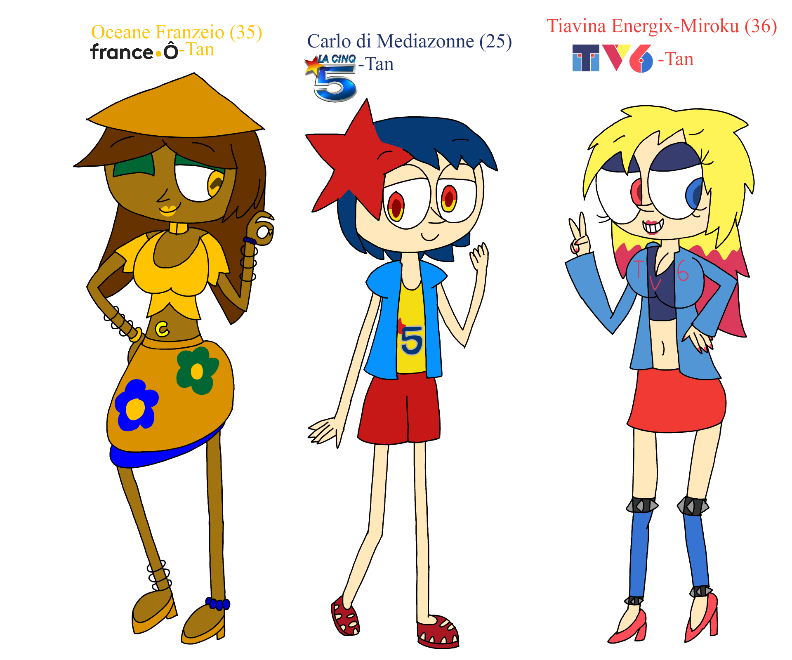

Les CHANNELloids, et ma contribution au projet

Le projet CHANNELloids est un projet créé par Cyber (Qui s'appelait Vaporwavetoons2002, puis Cybernostalgic02), dans lequel
on y trouve des personnages basés sur des chaînes Télévisions (tel que Nickelodeon, Cartoon Network, Disney Channel, et plus...).
Alors pourquoi est-ce que j'en parle? Parce qu'il y a spin off de cette série qui s'appelle "International CHANNELloids"
dans lequel j'ai participé et créé des personnages (notament des personnages basés sur des Chaînes Françaises de télévision)
Il est possible de tous les consulter dans le wiki "International CHANNELloids", mais je vais en présenter quelques ici,
en ajoutant des commentaires sur les personnages et leur créations. Il s'agit du projet le plus récent sur lequel je travaille.
Groupe M6
Je devais bien commencer avec un groupe de chaîne, alors j'ai commencé avec le groupe M6, car j'étais très familier avec 2 des chaînes du groupe : W9 (quand ils diffusaient les Simpsons, ce qui est pourquoi Walter est gros) et Gulli (c'est une chaîne avec laquelle j'ai grandi après Piwi). A ce moment, je venais juste de m'intéresser aux chaînes Télévision et à leurs habillages et leur thèmes, ce qui était utile au moment de dessiner le personnage basé sur la chaîne en question.
|
Bouquet Ciné+ OCS
En regardant les vidéos Télévolutions (Par METAL CAPONE), j'ai découvert que les chaînes Ciné+ ont fusionnés et sont devenus les chaînes Ciné+OCS en ayant fusionné avec OCS. Alors, j'ai regardé l'habillage et le thème des différentes chaînes. Alors pour OCS (anciennement Ciné+ Premier) J'ai pensé à un style qu'une actrice porterait. Pour Ciné+ émotion, j'ai pensé à un personnage avec une personnalité hypersensible, qui pleure facilement. Ciné+Frisson étant spécialisé dans les films d'actions et films d'horreurs, J'ai pensé à une apparence que l'on retrouverait dans un film d'horreur. Ciné+ Famille étant spécialisé dans les films pour la famille, le personnage serait jeune. Celle basée sur Ciné+Festival serait intéressé par les films, notamment ceux par des studios indépendants. Quant à Ciné+Classic, il serait logique que le personnage serait en noire et blanc, comme la majorité des films sur Ciné+Classic.
|
France.TV + Arte
Quant il était temps de faire les personnages basé sur France 2; 3; 4 et 5; J'ai pensé aux deux chaînes qui ont précédé France 2 et France 3 (c'est à dire Antenne 2 et FR3), alors j'ai laissé des références à Antenne 2 pour Katrine et FR3 pour Harold, si vous regardez bien, vous verrez les logos des anciennes chaînes, indiquant qu'avant de représenter France 2 et France 3, Katrine et Harold Représentaient Antenne 2 et FR3. J'ai aussi pensé que Katrine serait une sorcières, dont le sort préféré est de faire apparaître une pomme avec une fleur, faisant référence à Antenne 2. Ensuite, j'ai appris qu'entre la Cinq (que vous verrez plus tard) et France 5, il y avait la Cinquième, qui était bien plus proche de son successeur, de ce fait, Otto a un T-shirt avec La Cinquième. Meggin de son côté représente France 4, qui est la plus récente des Chaînes France.TV, a la capacité de se dupliquer, ce qui est une référence aux jingles pubs dans lequels on y voit des quadruplés.
Ensuite, j'ai Dessiné les deux CHANNELloids basés sur Okoo, oui, j'en ai fait deux car l'un serait basé sur Ludo et l'autre sur Zouzous, avant que les deux deviennent Okoo. J'ai pensé à faire des designs robotiques inspirés de Puchi Wana (un CHANNELloid fait par Cyber basé sur "Cartoonito").
Je ne savais pas trop quoi faire pour France Info, alors j'ai du laisser place à l'imagination pour Hirina (le CHANNELloid basé sur France Info). Tandis qu'avec Adelheid, ce n'était pas trop dur, puisque Arte est Franco-Allemand, de ce fait, il serait logique que Adelheid soit Franco-Allemande. Si jamais vous vous demandez "Mais où se trouve France Ô Dans tout ça?", Vous aurez la réponse un peu plus bas dans la page.
|
Groupe TF1
Puisque TF1 est la chaîne française la plus ancienne encore vivante (si l'on compte ses successeurs, sinon ce titre serait attribué à TMC), J'ai pensé à ce que le personnage basé sur TF1 serait un personnage important dans le monde des CHANNELloids
|
Canal+, C8, CNews et CStar
J'avais commencé le CHANNELloid sur Canal+ quand je voulais faire ceux basés sur Ciné+. Cependant, je les avait oublié, et j'y suis revenu quand il était temps pour moi de faire Deborah, Iva et Samuel (Les CHANNELLoids basés sur les 3 Chaînes Gratuites de Canal+, bien que ce ne sera plus le cas pour C8 à partir de Février 2025). Ensuite, j'ai fini le personnage basé sur Canal+, son design étant inspiré de la pub Canal+ avec l'ours. Pour les trois autres CHANNELloids, J'ai pris certains éléments venant des anciennes versions ou encore des chaînes qui ont précédé:
-Les cheveux de Deborah sont inspiré du premier logo de Direct 8, celui avec les deux Terres (Sa musique préféré est Moonlight Shadow, une musique utilisé dans les premiers jingles de Direct 8)
-Les Lunettes d'Iva sont triangulaires et ont un reflet qui rappelle I-Télé
-Les Lunettes de Samuel sont rouges en forme d'étoile, comme le logo de Virgin 17
|
Les Chaînes Disparues
Si jamais vous vous demandiez "Que se passe-t-il à un CHANNELloids lorsque sa chaîne disparait?", c'est tout simple, il est définitivement mort et disparaît derrière un nuage de bugs, Les CHANNELloids décédés se trouve dans un purgatoire qui est semblable à un village de retraîte, symbolisant que la chaîne (et le CHANNELloid basé sur cette chaîne) a pris sa retraite. Ici, j'ai dessiné les 3 Chaînes principales de la Télévision françaises ayant disparues, ces chaînes étant France Ô, la Cinq et TV6
|